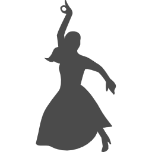

時代を一緒に作る
あなたの未来をHACKする
あなたの挑戦を
全力で応援します。
CONCEPT
自分の人生を最大限に発揮したい。
そう思ってる人は多いです。
しかし、その一歩を踏み出せる人は少ないです。
そこで弊社は自分で殻を破れない人たちを応援します。
一人で背負うには濃すぎる挑戦に、居心地の良いアットホームな環境を融合させます。
痺れるリスクと甘いセーフティーネットのバランスは人を高みへと導きます。
私たちが手を差し伸べることによって、新しい自分の色を出せるようになります。
そんな自分でいたいから、、、。
全部カシスオレンジの話です。
These are my hobbies!
ダンス
Dancing
高校生の時に三代目J Soul Brothersにハマり、その影響でダンスに目覚めました。 最初は三代目J Soul Brothersやマイケルジャクソンの振り付けをマネしていました。 大学に進学後はダンスサークルに入り、３年間ダンスに明け暮れました。
英語
English
僕は親の転勤でスイスに3年間住んでいました。その時にインターの小学校に通わせてもらい、その時に日常生活以上の英会話能力が身につきました。 日本に帰ってきてもTOEIC IPで810点を取ったり、大学の友達に英会話を教えるなどをています。
カラオケ
Karaoke
カラオケが一番のストレス発散です。子供の頃はカラオケが恥ずかしくて嫌いだったのに、いつしか自分の大事な趣味になっていました。 最近では流行りの曲を歌うことが多く、高音のパートが多い曲が多いので、今は裏声が綺麗に出る様に練習しています。
Works
株式会社IDHについて
IDH㈱の６つのポイント
創業1996年
今年で23年目ですがまだまだ活気溢れる会社です！
平均年齢24歳
平均年齢は若いですが、メンバーは全員個性豊かです！
月収20万円
24年間、親のすねをかじってたので、弊社の売り上げはまだまだです。早く売り上げがほしいところですね。
男女比 男:女=10:0
残念ながら女性社員は1人もいません、、、。
有給取得率100％
社員には積極的な有給の消化を促しています。まだもらったことはありませんが。
海外経験
コンニチハ。